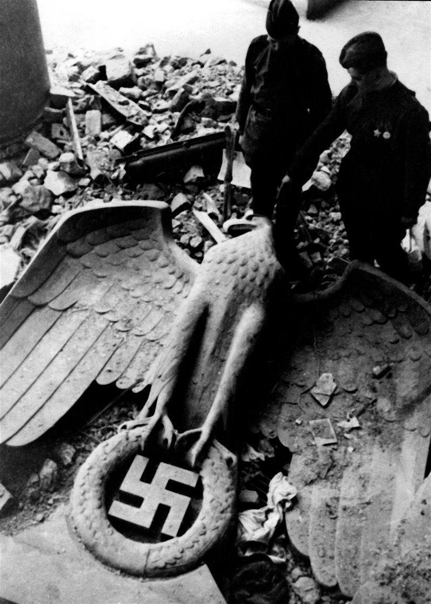
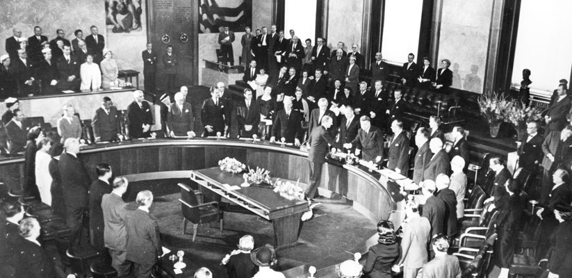
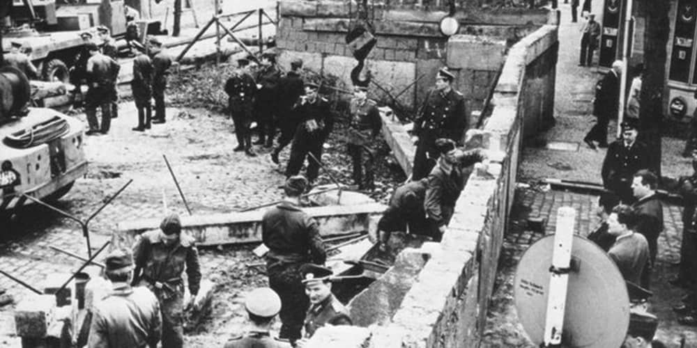

El 25 de abril de 1945, las tropas soviéticas entraron por primera vez en contacto directo, cortando a Alemania en ocho (Día del Elba). Las primeras unidades en hacer contacto fueron de la 69.ª División de Infantería norteamericana y la 58. División de Guardias soviética del 5.º Ejército de Guardias, cerca de Torgau, sobre el río Elba, localidad donde soldados de ambas nacionalidades realizaron una breve celebración por encontrarse personalmente tras meses de avances desde extremos opuestos. Contra lo que esperaba la propaganda nazi, el contacto entre ambas tropas no fue hostil, mas todo lo contrario.
Suicidio de Hitler y caída de Berlín

En las últimas horas de la batalla de Berlín, en la tarde del 30 de abril de 1945, el canciller alemán Adolf Hitler se suicidó en su búnker de la Cancillería del Reich en Berlín junto a Eva Braun, entendiendo que la guerra ya estaba perdida para el Tercer Reich y deseando no ser capturado por las tropas soviéticas que avanzaban sobre la capital alemana.
En su último testamento, Hitler nombró a sus sucesores: el almirante Karl Dönitz como el nuevo Reichspräsident (Presidente de Alemania) y al ministro de Propaganda Joseph Goebbels como el nuevo Reichskanzler. Sin embargo, Goebbels se suicidó con su esposa en Berlín en la mañana del 1 de mayo, dejando al almirante Dönitz orquestar las negociaciones de rendición.
El 30 de abril el almirante Dönitz no se hallaba en Berlín sino en Plön, desde donde se trasladaría para formar su nuevo gobierno al pequeño puerto de Flensburgo, cerca de la frontera danesa a orillas del Báltico, en el que se había instalado el último cuartel general de la Marina de Guerra alemana. Enterado de la muerte de Hitler, Dönitz nombró al diplomático Schwerin von Krosigk como nuevo Reichskanzler, con autoridad sobre las zonas de Alemania donde aún no habían entrado aliados o soviéticos.
Reacciones en el resto de Europa

Mientras tanto en Italia las tropas alemanas controlaban solo la zona más cercana a los Alpes y algunas localidades menores, después que una insurrección masiva de partisanos locales y el avance del V Ejército estadounidense los expulsaran de las principales ciudades del norte de Italia a partir del 25 de abril. Tras meses de negociaciones no autorizadas por Hitler, el 1 de mayo, el general de las SS, Karl Wolff, y el comandante en jefe del X Ejército de la Wehrmacht, el general Heinrich von Vietinghoff, aceptaron la derrota y ordenaron a todas las fuerzas armadas alemanas en Italia cesar las hostilidades, firmando un documento de rendición en la ciudad de Caserta que estipulaba que todas las fuerzas alemanas en Italia se rindiesen incondicionalmente a los Aliados el 2 de mayo; en ese documento se incluía también la rendición de las tropas italianas neofascistas que obedecían a la República Social Italiana.
La situación bélica en la propia Alemania era también prontamente liquidada: la batalla de Berlín finalizó al amanecer del 2 de mayo, cuando el último comandante en jefe de la guarnición, el general Helmuth Weidling, entregó la ciudad a las tropas soviéticas al considerar inútil proseguir la lucha en la urbe ya bastante destrozada. El 3 de mayo se rendían también las guarniciones alemanas en los puertos de Hamburgo y Bremen, que se hallaban cercadas desde varias semanas antes por tropas británicas y canadienses, capitulando también las guarniciones germanas que aún resistían en la costa norte de Alemania. Mientras tanto, tropas soviéticas y estadounidenses terminaban de ocupar las regiones de Sajonia y Turingia, mientras que fuerzas estadounidenses tomaban las localidades alpinas del sur de Baviera y del norte de Austria.
En azul, territorios de Europa bajo control efectivo del nazismo tras la muerte de Hitler.
El 4 de mayo de 1945, el mariscal británico Montgomery aceptó la rendición militar de todas las fuerzas alemanas que aún resistían en el norte y oeste de Holanda, y el extremo noroeste de Alemania, comprendiendo a las guarniciones alemanas aún situadas en Dinamarca. Esta capitulación se celebró en el cuartel general británico situado en la ciudad de Luneburgo, situada en un área entre las ciudades de Hamburgo, Hannover y Bremen. Como el comandante operacional de algunas de estas fuerzas era el almirante Dönitz, él mismo señaló a sus subordinados de la zona que la guerra europea había terminado y no tenía sentido resistir. Mientras tanto, fuerzas navales británicas se lanzaban a la ocupación de Dinamarca con apoyo de la resistencia danesa, desarmando y apresando a las fuerzas alemanas que encontraron, sin hallar resistencia apreciable.
El 5 de mayo, Dönitz ordenó a todos los submarinos de la Kriegsmarine cesar las operaciones ofensivas y regresar a sus bases. El mismo día las fuerzas alemanas de Noruega se rindieron en todo el país ante los británicos y la resistencia local, que días antes controlaba ya varias localidades rurales, mientras el extremo norte de Noruega era ocupado por los soviéticos. Ese mismo día estalló la sublevación de la resistencia checa en Praga que atacó a las tropas alemanas que aún resistían en las regiones centrales de Bohemia, atrapadas entre las tropas estadounidenses y el Ejército Rojo.
Al día siguiente, 6 de mayo, se rindió la guarnición alemana de Breslavia al mando del general Hermann Niehoff; esta ciudad de Silesia se hallaba cercada por tropas soviéticas desde mediados de febrero y las sucesivas ofensivas del Ejército Rojo la habían alejado paulatinamente del territorio bajo control nazi.
División del territorio de Alemania

El antiguo Tercer Reich fue dividido tal como se había acordado previamente por los Aliados en la Conferencia de Yalta. Algunas regiones como Prusia Oriental fueron repartidas entre Polonia y la URSS, mientras que las regiones germanas de Pomerania y Silesia, al este del río Óder, fueron transferidas a Polonia según lo pactado por el Reino Unido, los Estados Unidos, la Unión Soviética y Francia en los Acuerdos de Potsdam. El resto de Alemania, excluyendo a Berlín, quedaba dividido en cuatro zonas militares de ocupación: estadounidense, británica, francesa y soviética.
Austria, que había sido anexada por el Tercer Reich en 1938 (el Anschluss), fue separada de Alemania y dividida de manera similar entre los vencedores. En 1955 Austria firmó el Tratado de Estado austriaco y, bajo la condición de que permaneciera neutral, el país se convirtió en una república totalmente independiente. En 1949, las tres zonas ocupadas por Estados Unidos, Gran Bretaña y Francia se convertían en Alemania Occidental (República Federal de Alemania, RFA). En ese mismo año, la zona de ocupación soviética se convirtió en Alemania Oriental (República Democrática Alemana, RDA).
La ciudad de Berlín, la cual también estaba dividida en cuatro zonas, permaneció bajo ocupación militar formal hasta el 12 de septiembre de 1990, cuando el Tratado sobre el acuerdo final con respecto a Alemania fue firmado por las cuatro potencias y los dos gobiernos alemanes, el cual fue el tratado final de paz y la restauración de la plena soberanía alemana al acordarse oficialmente el fin de la ocupación extranjera. Esto permitió que la reunificación alemana se llevara a cabo el 3 de octubre de 1990 y el país reunificado obtuviera soberanía total nuevamente el 15 de marzo de 1991. Alemania firmó un tratado separado con Polonia, confirmando en ese mismo año la plena validez de la frontera polaco-germana establecida en 1945.